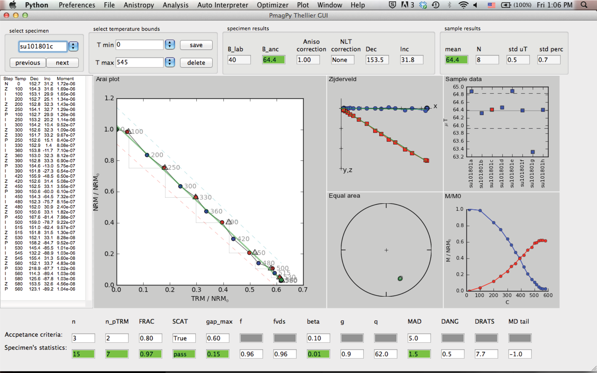

Thellier GUI
Contents
Thellier GUI#
[Essentials Chapter 10] and [MagIC] [Thellier_GUI_full_manual.pdf]
The program Thellier GUI (thellier_gui.py) combines functions from thellier_magic.py and new tools described by Shaar and Tauxe (2013) in a user-friendly graphical user interface (GUI).
As with Demag GUI, Thellier GUI can be called from the command line or from within Pmag GUI.
To launch Thellier GUI independently, find your command line and enter:
thellier_gui.py
If using Anaconda Python, you will instead use:
thellier_gui_anaconda
Once open, Thellier GUI loads files already prepared in a This Project directory and the interpretations from Thellier GUI are part of the workflow of Pmag GUI. This section is a brief introduction on how to use Thellier GUI as a stand alone application. Much more information is available within this manual: Thellier GUI full manual.
A complete list of the definitions for paleointensity statistics used by Thellier GUI is available as a supplement to the article by Paterson et al., 2014 and available for download here:
After launching the program, a “choose project directory” dialog window will appear as soon as the GUI is started. Your ThisProject directory should include a file named magic_measurements.txt (created for example by Pmag GUI. If a file named rmag_anisotropy.txt is in the project directory, then the program reads in the anisotropy data. Reading and processing the measurements files may take several seconds, depending on the number of the specimens.
Reading and compiling measurements data#
When your ThisProject project directory is selected, the program reads all the measurement data, checks them, processes them and sorts them. If non-linear-TRM (NLT) data exist in magic_measurement.txt then the program tries to process the data using Equations (1)-(3) in Shaar et al., 2010. The program reads measurement.txt, and processes the measurements for presentation as Arai and Zijderveld plots. We recommend that you check all the warnings and errors in Thellier_GUI.log before starting to interpret the data. For details about warnings and error messages during these steps, consult the tutorial document in the thellier_GUI folder in data_files. Also, consult the Preferences to change certain plotting options.
Main panel#
This figure shows a snapshot of the main panel.
{kind=link}
The top field in the panel includes the following buttons/controls (from left to right):
Specimen: a list of the specimens in the project folder sorted by name.
previous/next: buttons to move forward and backward in the specimens list.
T min/T max: buttons to select temperature bounds.
save/delete: save or delete current interpretation. This information will be used later to generate a redo file.
B_lab: laboratory field in units of \(\mu T\).
B_anc: specimen’s paleointensity in units of \(\mu T\).
Aniso Correction: anisotropy correction factor.
NLT Correction: Non-Linear TRM (NLT) correction factor.
Dec/Inc: Specimen declination/inclination calculated by PCA of the NRM in the selected temperature bounds.
Sample mean, number of specimens, standard deviation and percent standard deviation.
The center of the main panel has these elements:
measurements text panel: Four columns of the measurement data: Step is “N“ for NRM, “Z“ for zero field step, “I“ for infield step, “P“ for pTRM check, and “T“ for tail check. The temperature of each step is given in C. Also shown declination, inclination and moment (in units of \(Am^2\))
Arai plot: Arai plot normalized by \(NRM_0\). blue circles are zero field steps, red circles are infield steps, triangles are pTRM checks, blue squares are tail checks. Temperatures are displayed near data points. Temperature bounds and best fit line are marked in green. ’SCAT box’ is marked with dashed lines (only if SCAT is True).
Zijderveld plot: A Zijderveld plot of the NRM step. The x axis is rotated to the direction of the NRM, blue is the x-y projection, and red is x-z projection.
Equal area plot: An equal area projections of the NRM steps. solid circles are positive inclination. open circles are negative inclinations.
Moment-temperature plot: NRMs are in blue, pTRMs are in red.
sample data: If at least two specimens have a saved interpretation, then their values are displayed on this plot. The mean \(\pm\) standard deviation of the mean are marked as horizontal lines.
The bottom of the main panel include paleointensity statistics. The first line has the threshold values (empty if N/A). The second line is the specimen’s statistics. For details see Appendix A1 in \href{http://dx.doi.org/10.1002/ggge.20062}{Shaar and Tauxe (2013)}. \nocite{shaar13}